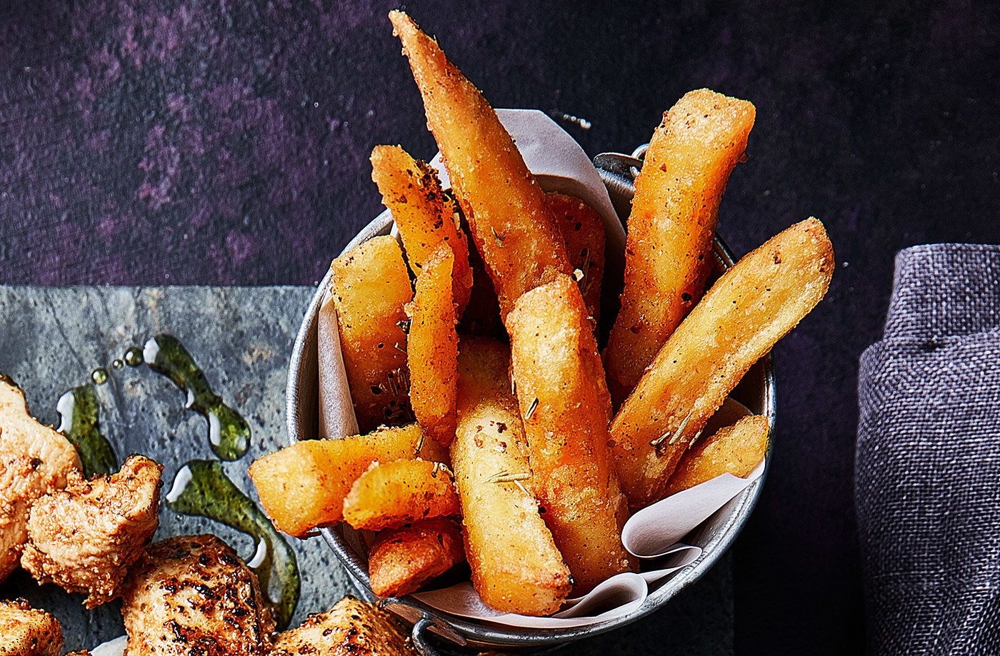

Fries

Desription
These aren't just any oven fries, they're covered in an array of tangy and exciting flavours - enjoy a little lift from the herbs and spices then bake until golden and crisp
Ingredients
- 500g oven chips
- vegetable oil
- ½ tsp smoked paprika
- ¼ tsp smoked or regular sea salt flakes
- ½ tsp dried rosemary
- small pinch of cayenne pepper
- ¼ tsp garlic granules
Steps
- Put oven chips on a large baking tray. Drizzle over vegetable oil and sprinkle over smoked paprika, smoked or regular sea sealt flakes, dried rosemary, a small pinch of cayenne pepper and garlic granules; toss well to coat.
- Bake the chips to pack instructions until golden and crisp.